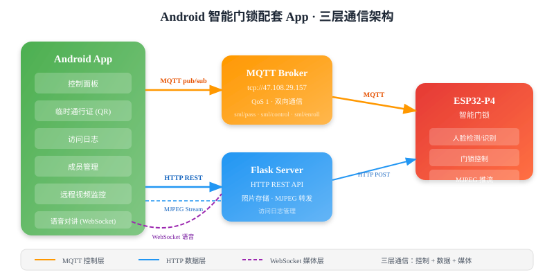

核心项目

无人机野生动物巡查系统
2025 电赛 H 题：K210 YOLO 动物检测 + BFS 路径规划 + 树莓派 SLAM 定位，实现 63 格全覆盖自主巡查。

智慧信号显示器
基于国产安路 FPGA 的 DAC 信号发生器，DDS 波形生成 1KHz~60MHz，支持语音+WiFi 远程控制。

智能家居中枢控制系统
基于高性能微控制器的物联网大脑，支持全屋设备毫秒级响应，打造无感知的自动化生活场景。

ESP32-P4 边缘 AI 智能门锁
端侧人脸检测→活体检测→人脸识别流水线，MobileNetV1 INT8 量化 ~160KB，FreeRTOS 双核调度。

Android 智能门锁配套 App
MQTT 双向通信 + MJPEG 远程监控 + WebSocket 语音对讲，实现与 ESP32-P4 门锁的完整交互。

ESP32-C5 智能手表
边端云协同：LVGL UI + 云端 AI 语音 + TFLite 手势识别 + AP 配网，全栈嵌入式开发。

边缘计算数据网关
工业级高并发数据采集与处理中心，支持多协议深度转换，在边缘侧实现实时的数据清洗与预分析。

云原生设备管理平台
可视化的千万级设备资产管理平台，融合流式数据处理与 3D 可视化大屏，提供全局洞察力。